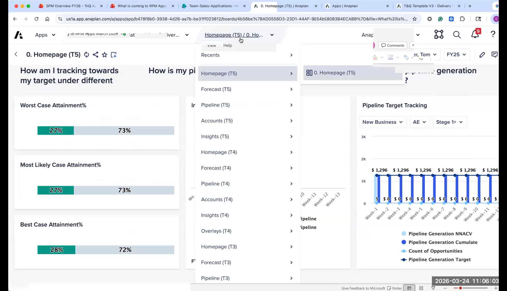
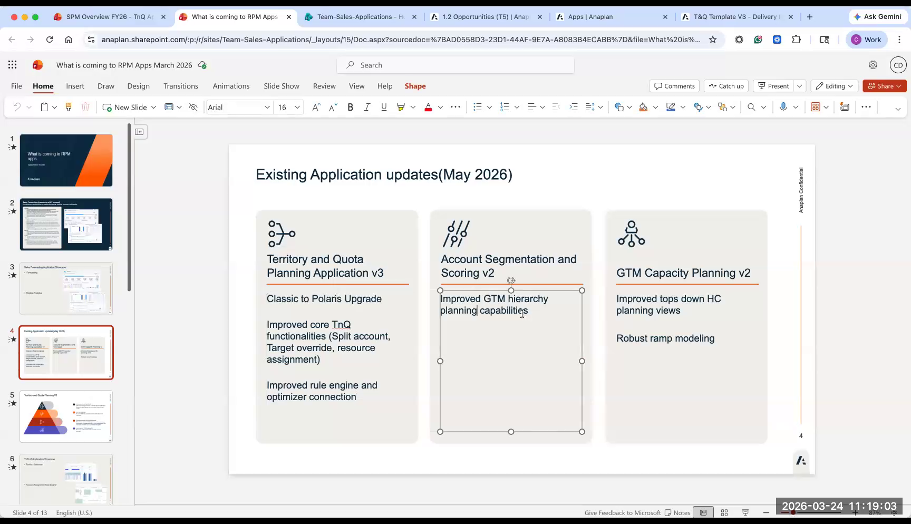
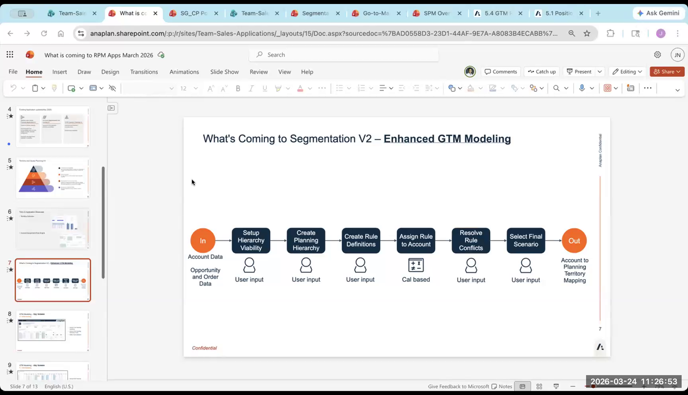
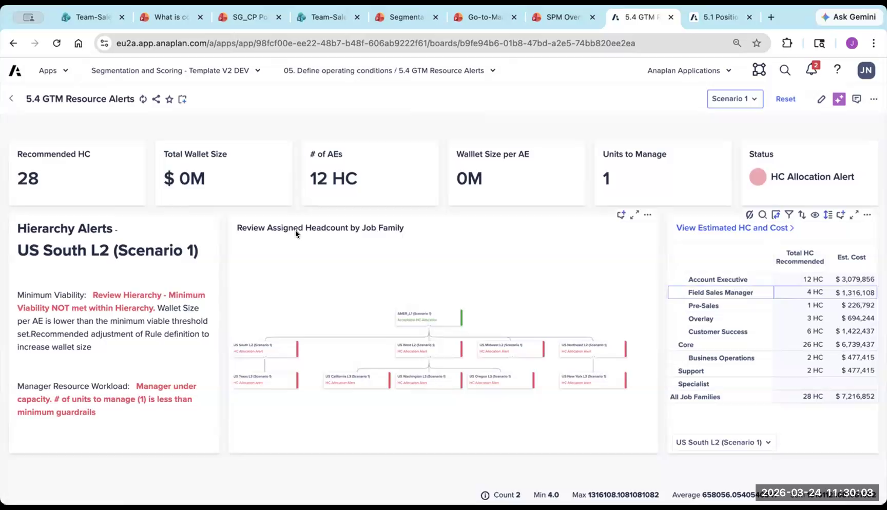

What's Coming in Sales Applications
Sales Forecasting GA, T&Q V3, Segmentation V2, Capacity V2
This section covers new and upcoming releases as of the workshop date (March 2026). Sales Forecasting went GA the day after the workshop. T&Q V3 launches May 2026. Segmentation V2 and Capacity V2 are imminent.
Sales Forecasting App — Now GA 🎉
The Sales Forecasting app just went generally available. As a workshop participant, you have early access.
Key Facts
- No configurator — you get it as-is. Some configurability, but much less than T&Q, Segmentation, or Capacity.
- Designed to work alongside Anaplan for Salesforce (A4S) or ADO for CRM data ingestion
- Does NOT support write-back to Salesforce currently — inbound data only. This is a meaningful limitation for customers who want to make forecast decisions in Anaplan and sync back to Salesforce.
- ADO streaming: Not currently streaming — batch ingestion only. Salespeople expecting real-time pipeline data will find the refresh lag frustrating.
Core Functionality
- Homepage: Summary view — overall forecast vs. target across the hierarchy
- Forecast input page: Seller-level forecast category decisions with waterfall charts. Uses the new Insights Panel (side panel on a board, not a separate worksheet). Still being refined — some links may not work yet.
- Account planning and opportunity planning per seller — structured drill-down
- Scenario planning: Include/exclude specific opportunities across scenarios (worst case, most likely, optimistic)
- Pipeline analysis: Stage-based pipeline view, data quality enforcement (required fields by stage — CRM hygiene enforcement built in)
- Manager views: Same data, different lens — for field ops and forecast facilitation
What It's Good For
- Structured forecast collection from sellers (replaces spreadsheets and Salesforce roll-ups)
- Scenario modeling on pipeline
- CRM hygiene enforcement through required field rules by stage
- Centralized visibility across the hierarchy
What It's Not (Yet)
- Not a full opportunity management system — don't position it as a Salesforce replacement
- Not real-time — batch data refresh only
- Not bidirectional — can't write forecast decisions back to Salesforce

Sales Forecasting going GA is significant. ICM (Incentive Comp) is still on the roadmap. When ICM ships, the full SPM suite will be complete: T&Q + Segmentation + Capacity + Forecasting + ICM. That's the end state — a fully integrated suite for the entire revenue go-to-market planning cycle.
T&Q V3 — Launching May 2026
Classic → Polaris migration plus significant feature additions. All three SPM apps move together.

- No more Data Hub — ADO required. All three SPM apps (T&Q, Seg, Capacity) move to ADO simultaneously in May. If your customer is still on Data Hub, they'll need to plan for the ADO migration as part of their V3 upgrade.
- Territory assignment — new intersection model. Territory × employee × time instead of a children list. More robust and handles complex assignment scenarios, but loses day-level precision for boomerang employees (an extension is needed for that edge case).
- Target overrides at every level. V2 allowed override at one configured level only. V3: override at every level of the hierarchy. Much more flexible.
- Split account management — now native. No longer requires an extension. Define splits, percentages, start/end dates all within the base app.
- Rule engine: Inheritance rules. Parent territory rules are inherited by child territories. Eliminates the need to define the same geographic rule on every territory in a region.
- GTM hierarchy comparison. New: current vs. planning hierarchy with side-by-side comparison pages — see the delta before you commit.
- Coverage optimization. New feature: account-level analysis showing whether adding overlay to a territory is ROI-positive. Still early — account-level granularity may be too fine for most customers.
Segmentation V2 — Imminent

- GTM Hierarchy Planning — completely redesigned. Much more intuitive. Better reporting on hierarchy balance. The V1 hierarchy planning module was functional but hard to use; V2 is a substantial improvement.
- Resource alerts — new. Flags when a planned hierarchy node is over- or under-resourced based on account count and role ratios. Surfaces imbalances before you commit.
- Rule conflict resolution — improved. Easier to identify and fix conflicting rules (e.g., an account matching both Strategic and Named rule sets).
- Workflow to activate planning hierarchy — cleaner process for committing a scenario and exporting to T&Q.
Capacity V2 — Imminent

- Improved UX design. More intuitive navigation, clearer workflow status indicators. The V1 workflow status was easy to miss and caused confusion when scenarios were locked.
- More robust ramp modeling. Better financial liability calculations — models the "payback period" for a hire based on draw, ramp, and seasonality. Shows when you earn back the cost of hiring someone depending on what month they're hired.
- Enhanced reporting. Better visuals on scenario comparison and variance analysis.
Roadmap Horizon
- ICM (Incentive Comp): On roadmap, coming later this year. This will complete the full SPM suite. Huge addressable market — no one loves their current comp tool. Every customer you talk to hates their ICM system.
- Split Allocation: The first half of ICM functionality — could ship earlier as a standalone feature before the full ICM module is ready.
- App-to-App Native Connections: Currently, all inter-app data flows require manual export/import or ETL. The goal is native connections: Segmentation → T&Q → Capacity that update automatically when you finalize a planning exercise. Not yet built.
- ADO Bidirectional: Snowflake and Databricks write-back coming. Currently all ADO flows are inbound-only (from source systems into Anaplan). Bidirectional support enables use cases like forecast decisions flowing back to Salesforce.